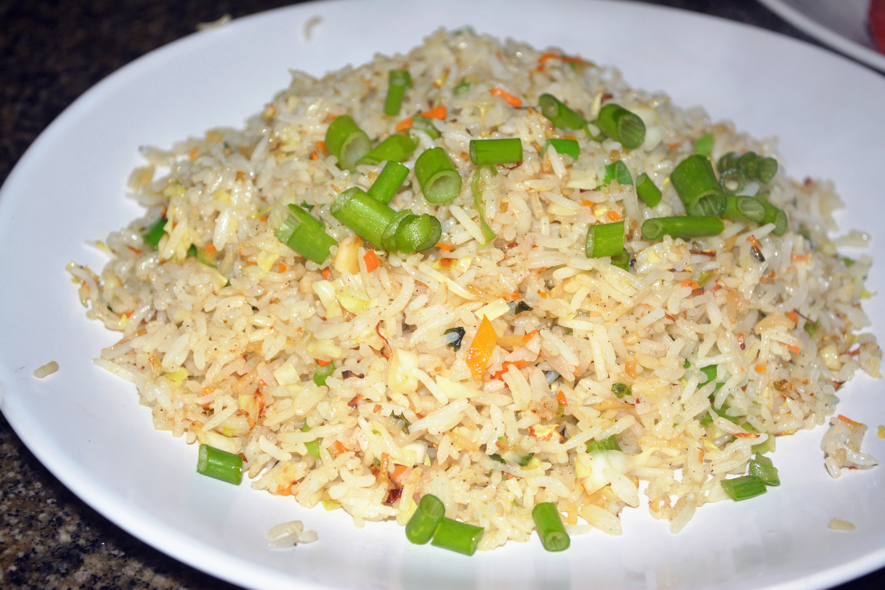

Onion Fried Rice

Description
This onion fried rice is a quick, minimal-ingredient dish that's flavorful
and filling. Perfect as a standalone meal or as a side with curries or
stir-fries.
With just onions, cooked rice, and a few pantry staples, you can whip this
up in minutes.
Ingredients
- 1 cup cooked rice (preferably cold)
- 1 large onion, thinly sliced
- 1 tablespoon oil or ghee
- 1/2 teaspoon cumin seeds (optional)
- 1/4 teaspoon turmeric powder
- Salt and black pepper to taste
- Chopped coriander leaves for garnish (optional)
Steps
- Heat oil or ghee in a pan. Add cumin seeds and let them splutter.
- Add sliced onions and sauté until golden brown.
- Sprinkle turmeric and mix well.
-
Add the cooked rice and toss until everything is evenly coated and warm.
- Season with salt and pepper. Garnish with coriander and serve.
home page